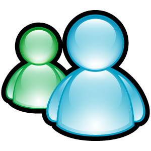

i love music and chuzzle
login
ONLINE:
0

New Interview
New Interview
Interview Title:
YouTube Video ID:
Paste just the video ID from the YouTube URL
Description (optional):
Post Interview
Cancel
PAINTYUM RADIO
_
⚫ OFFLINE
PAINTYUM RADIO
Waiting for stream...
⏮
▶
⏹
⏭
Volume
80
USERS
CHATROOM
Untimeout
Unban
Please log in to chat
Send
Untimeout Users
Close
Banned Usernames
Close